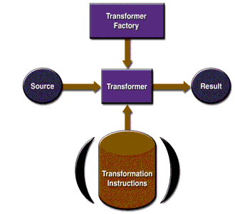

The Extensible Stylesheet Language Transformations APIs
Figure 4-3 shows the XSLT APIs in action.

A
TransformerFactoryobject is instantiated and used to create aTransformer. The source object is the input to the transformation process. A source object can be created from a SAX reader, from a DOM, or from an input stream.Similarly, the result object is the result of the transformation process. That object can be a SAX event handler, a DOM, or an output stream.
When the transformer is created, it can be created from a set of transformation instructions, in which case the specified transformations are carried out. If it is created without any specific instructions, then the transformer object simply copies the source to the result.
The XSLT Packages
The XSLT APIs are defined in the packages shown in Table 4-3.
All of the material in The J2EE(TM) 1.4 Tutorial is copyright-protected and may not be published in other works without express written permission from Sun Microsystems.